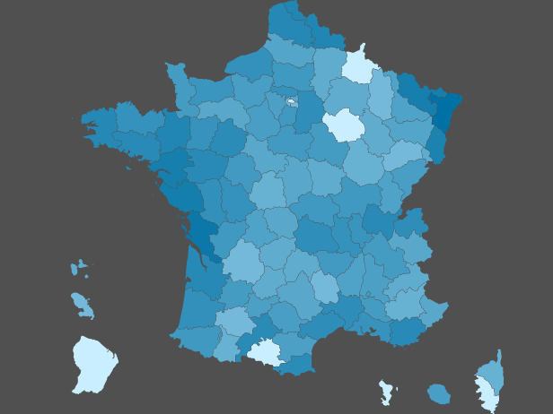
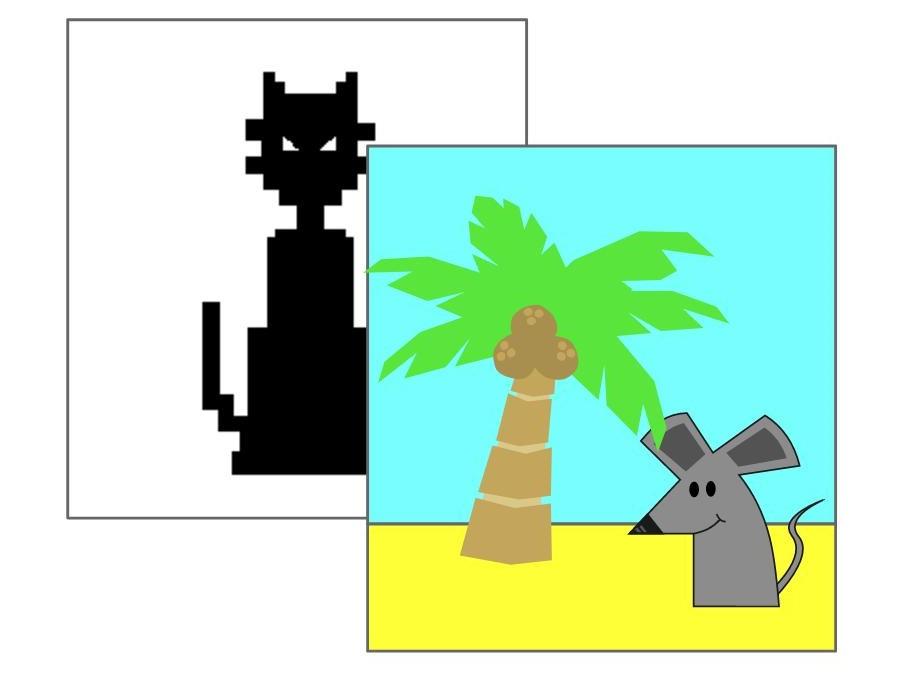
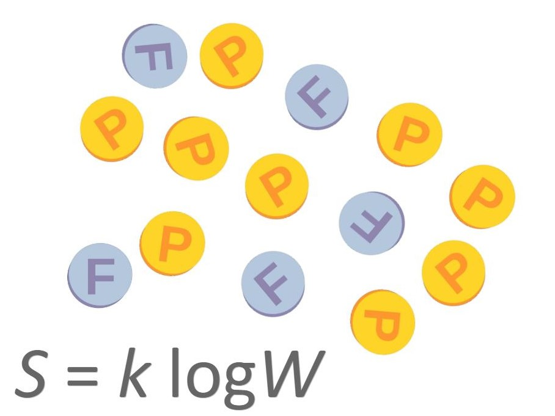
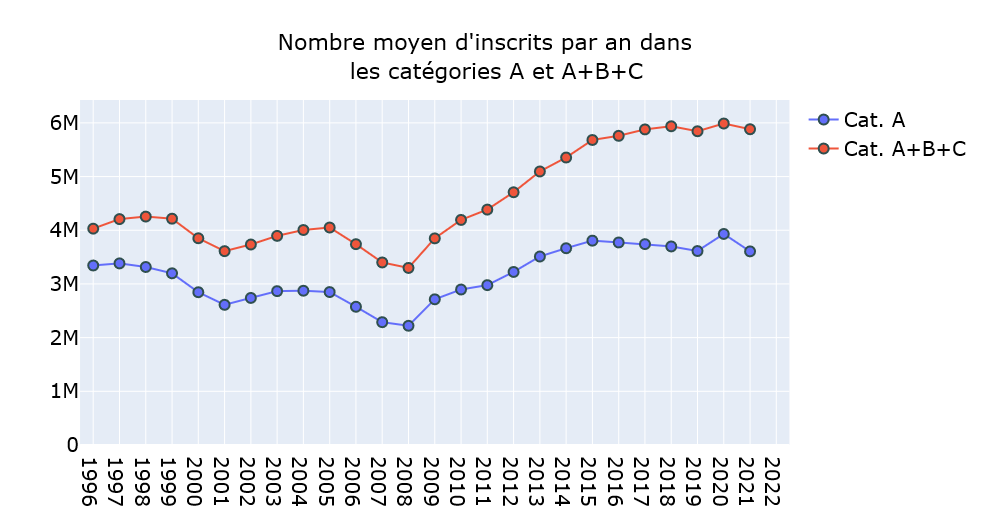
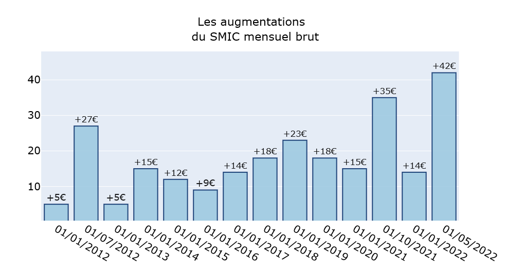
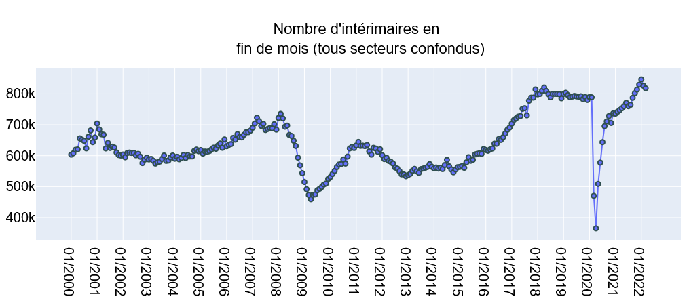

Rues de France
Visualisez dans quels départements se trouvent les rues, avenues, boulevards etc. qui portent un nom particulier.
Démarrer

Stéganographie numérique
Cacher une image contenant un texte, un plan... dans une image anodine, c'est le principe de la stéganographie. Exemple d'algorithme simple.
Le repository github est consultable ici.
Harmonic Mirror
S'amuser avec sa webcam. Travail inspiré de la simulation moléculaire.
Le repository github est consultable ici.

Entropie (1)
L'entropie est-elle une mesure du désordre ? Voyons ce qu'il en est en jouant à Pile ou Face.
Lire


